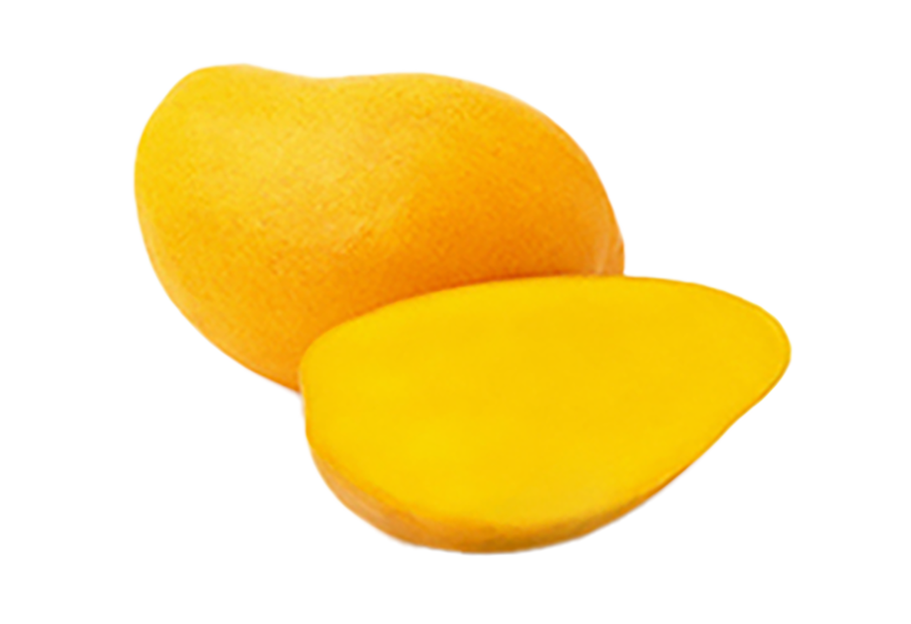
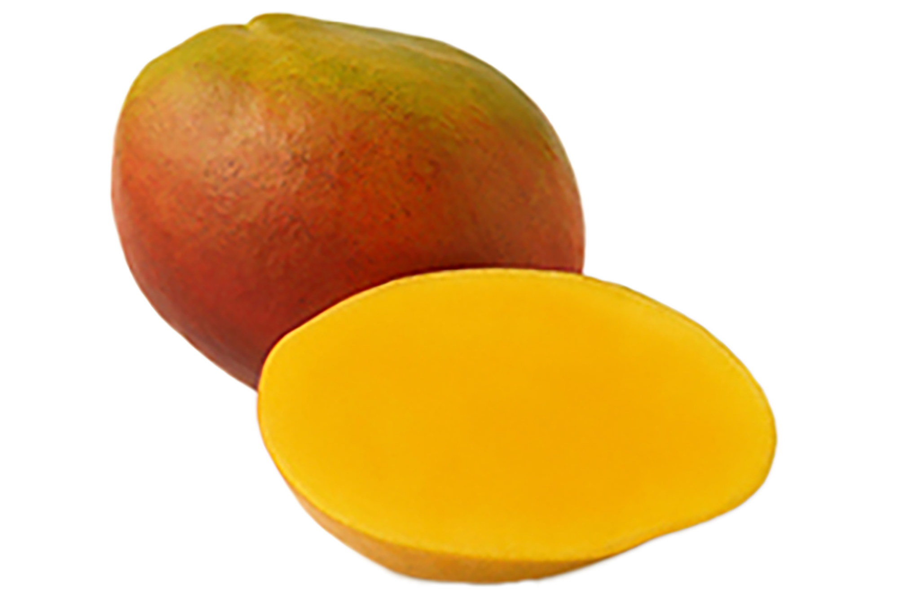
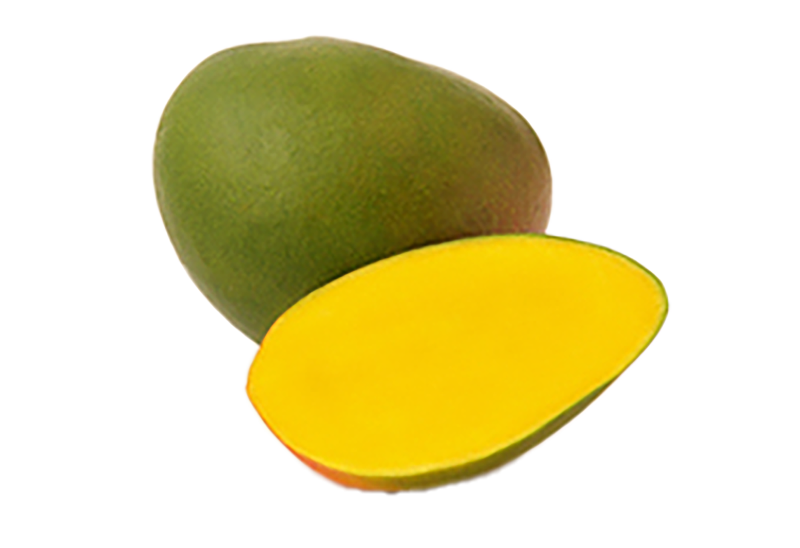

Originario del sur de Asia, principalmente de la India y Birmania, el mango se cultiva desde hace más de 4,000 años. Hoy en día es una de las frutas más populares y consumidas en regiones tropicales y subtropicales de todo el mundo.
Esta fruta destaca por ser una excelente fuente de vitaminas A y C, además de aportar fibra dietética y potentes antioxidantes. Su consumo regular contribuye a reforzar el sistema inmunológico y a mantener una buena salud digestiva.
En la gastronomía, el mango es sumamente versátil: se disfruta fresco, en batidos, postres, ensaladas y salsas agridulces. En países como México, es muy común consumirlo preparado con chile en polvo, chamoy y limón.
Variedades de Mango

Mango Ataúlfo
De tamaño mediano, color amarillo intenso, pulpa muy cremosa, sin fibra y con un sabor extremadamente dulce.

Tommy Atkins
Característico por su piel firme con tonos rojos y verdes. Es muy resistente y comercializado mundialmente.

Mango Kent
Fruta de forma ovalada, jugosa y suave al tacto, ideal para preparar jugos y consumirse directamente.